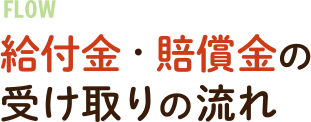
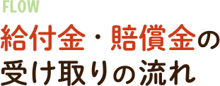

アスベスト（石綿）による健康被害とは、飛び散ったアスベスト（石綿）を吸い込むことにより、石綿肺、中皮腫や肺がんなどを発病することをさします。
アスベスト（石綿）の健康被害にあわれた方は、アスベスト被害を受けた状況（作業内容や作業場所）により救済方法が異なります。
労災保険や石綿健康被害救済給付のほか、国に対しては給付金・賠償金を、企業に対しては損害賠償を請求する方法があります。国への給付金・賠償金請求には、いわゆる建設労働者型と工場労働者型という２つの類型があります。
「心当たりはあるけれど、どちらの類型の対象となるかわからない」という方、
お一人で悩まず、ぜひ一度当弁護団にご相談ください。


国の責任が認められた主な職種
大工、内装工、電工、吹付工、左官工、塗装工、タイル工、配管工、ダクト工、空調設備工、鉄骨工、溶接工、ブロック工、保温工、鳶工、墨出し工、型枠大工、解体工、はつり工、築炉工、エレベーター工、サッシ工、シャッター工、電気保安工、現場監督など

「アスベストを製造する工場」ではない方も救済対象となる可能性があります。
例えば次のような事業所や工場で働いていた方々も、国からアスベスト（石綿）被害賠償金をもらえる可能性があります。お心当たりのある方やご遺族の方は、お気軽にお問い合わせください。
【救済対象となる可能性がある工場】 ・セメント、コンクリートブロック等の製造工場 ・スレートや煙突等の製造工場 ・電気機械の製造工場 ・化学繊維製造機械の製造工場 ・自動車整備会社など
 

まずはお電話、又はご依頼フォームからお問い合わせください。（お急ぎの場合はお電話がおすすめです。）
お電話は平日9時～17時まで、ご依頼フォームは24時間365日受付可能です！
依頼者の方にもご協力をお願いしつつ、給付金の請求に必要となる書類を収集していきます。当弁護団でしっかりとサポートしていきますのでご安心ください。
依頼者の方から提出いただいた資料をもとに、当弁護団が詳しく調査・検討を行います。同時に、被害者であることの証明や給付金や賠償金の受給要件に必要な書類が揃っているか、書類に不備や記入漏れがないかどうかをチェックします。
国への給付金申請
労災認定または石綿救済法による救済を受けている方は、厚生労働省へ必要書類を提出いたします。
労災認定または石綿救済法による救済を受けていない方は、労災申請または石綿救済法による給付金申請手続を事前に行い、認定を受けたあとに厚生労働省へ必要書類を提出いたします。
認定
厚生労働省の審査・認定審査会の審査を受け、給付金支給の認定がされると認定決定通知書が送付されます。
給付金の受け取り
給付金額が決定したら、給付金を受け取ることができます。
※訴訟による建設アスベストの国家賠償請求については別途お尋ねください。

訴訟の提起
工場労働型の場合、賠償金を請求するための書類（訴状）を弁護士が作成し、必要な点資料と一緒に裁判所へ提出します。
和解
和解の成立により、依頼者の方の症状・病態に応じた賠償金などの金額が決定し、その内容を記載した和解調書が裁判所にて作成されます。
賠償金の受け取り
弁護士が和解調書などの賠償金の請求に関する書類を国に提出すると、和解で決定した賠償金を受け取ることができます。

相談料は無料！お気軽にお問い合わせください
 初回相談料は０円です。
初回相談料は０円です。
 表は横スクロールでご覧いただけます！
表は横スクロールでご覧いただけます！
| 着手金 | 報酬金 | |
|---|---|---|
| 国に対する建設アスベスト給付金請求 | 0円 | 得られた給付金の11％ |
| 雇用主に対する損害賠償請求 | 交渉は11万円～33万円 訴訟の場合は３３万円以上 | 得られた賠償金の１１％～ |
| 建材メーカーに対する損害賠償請求 | ３３万円以上（訴訟） | 得られた賠償金の22％ |
| 着手金 | 報酬金 | |
|---|---|---|
| 国に対する損害賠償請求 | １１万円 | 和解金の１６．５％～22%を基準 |
| 雇用主に対する損害賠償請求の場合 | 交渉は11万円～33万円 訴訟の場合は３３万円以上 | 得られた利益の１１％～ |
※1 実費（医療機関に対する意見照会費用、通信費、各種書類取り寄せ費用、印紙代等）が必要となる場合があります。
※2 事件が控訴によって高等裁判所に係属する場合には、追加着手金・実費が必要となります。
※3 上記の弁護士費用は、いずれも消費税込みの金額です。
※4 上記の弁護士費用は目安であり、事案の難易度、証拠収集状況、相手方の対応等によって個別にご相談させていただく場合があります。
※5 労災などとかの手続きは別途ご相談に乗らせて頂きます


現在、弁護団には、愛知、岐阜、三重の3県にまたがる合計15名ほどの弁護士が所属しています。
私たちアスベスト・じん肺被害救済東海弁護団は、アスベストや粉じんよる健康被害を受けている労働 者や住民の方々の法的救済を図ることを目的とした弁護士の集まりです。
2005年9月に結成され、以後、約20年にわたり活動を継続してきました。現在、弁護団には、愛知、岐 阜、三重の3県にまたがる合計１５名の弁護士が所属しています。
これまで、アスベスト被害者やじん肺患者を対象とした医師及び弁護士による無料電話相談会の実施 や、その結果寄せられた個別の事案の解決（労災申請など）、岐阜県羽島市にあるニチアス羽島工場周辺 地域におけるアスベストや粉じんよる健康被害の調査活動等を行ってきました。無料電話相談会は、現在 年2回のペースで実施しています。相談を受けた事例の中から、健康管理手帳の取得や労災認定などの成果 を挙げてきました。
2010年6月には、中部電力の火力発電所で長年勤務し退職後にアスベストが原因で中皮腫に罹患して死 亡した方の遺族が、会社を相手取って損害賠償を求めた裁判において、解決金3500万円の支払い及び退職 者向けの弔慰金制度の創設等を内容とする画期的な和解を勝ち取りました。
その後も企業に対する損害賠償には継続して取り組んでいます。2023年9月27日に名古屋地裁におい て、石綿曝露作業に従事して死亡した方について大同特殊鋼株式会社の子会社の責任を認める判決を勝ち 取りました。2023年9月28日には名古屋高裁において、石綿曝露作業に従事して死亡した方の遺族が会社 との間で相場より少額の賠償金を会社が支払うことで精算を行う旨の合意をした事案で当該合意を錯誤に より無効であるとして1審に差し戻す判決がなされました。
労災申請についても、様々な事案に対応しています。相談日から遡って7年前に亡くなった労働者につい て、当時の担当医からは病気についてアスベストが原因ではないと言われたことから、労災申請を諦めて いた遺族から当弁護団が依頼を受け、石綿健康被害救済法（労災申請が時効となった方を対象とする救済 法）に基づく申請をしたところ、仕事を行っていた際に石綿に曝露したことが原因で死亡したと認めら れ、特別遺族年金が受給できるようになった事例もあります。
そのほか、この間の泉南アスベスト訴訟の取組みを受けて創設されたいわゆる工場型の給付金制度、建 設アスベスト訴訟の取組みを受けて創設された建設アスベスト給付金制度についてもご相談をお受けし、 対応してきました。
2018年以降に集計した事件に限っても約80件の被害回復を実現し、被災者やご遺族の賠償金を受け取る お手伝いをしてきました。弁護団としては、国家賠償請求、企業に対する損害賠償請求訴訟、労災申請、 石綿救済法に基づく申請、工場型の給付金請求（国に対する訴訟提起）、建設アスベスト給付金の申請、 健康管理手帳の取得支援などの活動をしています。
専門医に協力をいただく体制があり、医学的な問題に関しても対応しています。全国各地で被害者救済 に取り組む弁護団とも必要に応じて連携をとり、適切な事案対応に努めています。
以上。
相談料は無料！お気軽にお問い合わせください


 1分カンタン
1分カンタン
お問い合わせフォーム
365日24時間ご相談いただけます！